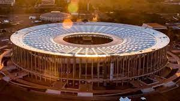

Botafogo de Futebol e Regatas é uma agremiação poliesportiva brasileira, com sede no bairro homônimo ao clube, na cidade do Rio de Janeiro. Nascido da fusão do Club de Regatas Botafogo com o Botafogo Football Club, é um dos principais clubes do Brasil.
No dia 1º de julho de 1894, nascia na praia de Botafogo o CLUB DE REGATAS BOTAFOGO. O clube ganhou esse nome em homenagem à enseada do bairro onde competiam os seus barcos. A sede era em um casarão, demolido, no sul da praia de Botafogo, encostado ao Morro do Pasmado, onde hoje termina a Avenida Pasteur. Em 1899, surgiu uma lenda nas águas da Baía de Guanabara, a embarcação botafoguense Diva, que venceu todas as 22 regatas que disputou, sagrando-se campeã carioca. Em razão desse título, o Botafogo é o único clube do Brasil campeão de três séculos. O Club de Regatas Botafogo foi o primeiro clube carioca campeão brasileiro de alguma modalidade esportiva: de remo, em campeonato realizado no Rio de Janeiro em outubro de 1902, com a vitória do atleta Antônio Mendes de Oliveira Castro, que anos mais tarde viria a se tornar presidente do clube. Os fundadores do Club de Regatas Botafogo: Alberto Lisboa da Cunha, Arnaldo Pereira Braga, Arthur Galvão, Augusto Martins, Carlos de Souza Freire, Eduardo Fonseca, Frederico Lorena, Henrique Jacutinga, João Penaforte, João Teixeira, José Maria Dias Braga, Julio Kreisler, Julio Ribas Junior, Luís Fonseca Quintanilha Jordão, Oscar Lisboa da Cunha e Paulo Ernesto de Azevedo.
Seja sócio CAMISA 7 e aproveite diversos benefícios do seu time do coração!
Saiba maisIngresso para todos os jogos no Estádio
Prioridade na escolha do setor
Desconto no ingresso para família e convidados
Experiências nos jogos
Estacionamento com desconto
R. José dos Reis, 425 - Engenho de Dentro, Rio de Janeiro - RJ, 20770-001
